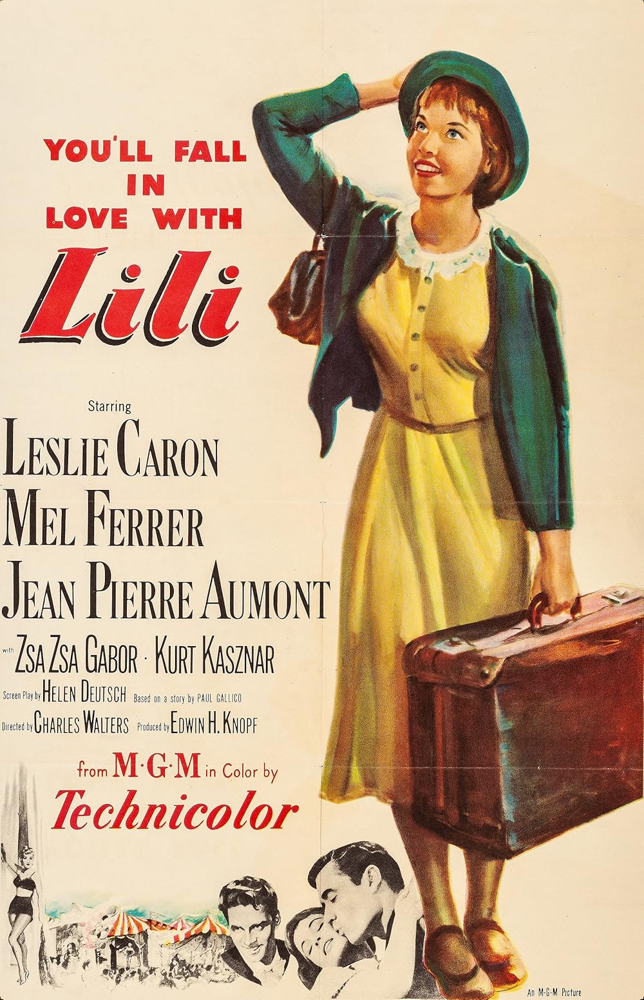

Lili
26th Academy Awards
(Oscars 1954)
6 Nominations, 1 Award
| Nominations | ||
|---|---|---|
| Category | Nominees | Result |
| Actress | Leslie Caron | Nominated |
| Directing | Charles Walters | Nominated |
| Writing (Screenplay) | Helen Deutsch | Nominated |
| Cinematography (Color) | Robert Planck | Nominated |
| Art Direction (Color) | Arthur Krams, Cedric Gibbons, Edwin B. Willis, and Paul Groesse | Nominated |
| Music (Music Score of a Dramatic or Comedy Picture) | Bronislau Kaper | Won |